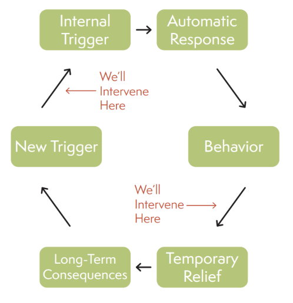

A prototype that introduces doomscroll
interventions to help users become more aware of their digital consumption habits.
UI Designer · UX Researcher
Skills: User Research, User Testing, Figma, UI Design
Problem Statement
People often lose track of how long they spend doomscrolling, especially on apps designed
to keep them engaged. Because this behavior is subconscious, users lack the autonomy to stop themselves—even
when they recognize the negative effects on mood, focus, and productivity. Existing screen-time tools are
easy to bypass or ignore, leading to ineffective self-regulation. Our goal is to give users intentional,
interruption-based moments that break the automatic cycle of endless scrolling.
Research
In order to create an app that effectively intervenes with the doomscroll phenomonon, we
decided to gather insights as to why doomscroll is such an issue.
Primary Research
For our primary research, we interviewed 3 participants about doomscrolling. Our
participants were between the ages of 18-21 and often scroll through their phones.
Questions
Define doomscrolling.
" When you are glued to the phone, stuck on social media in a loop of consuming content for
hours at a time." - Participant 1
"Endless scrolling." - Participant 2
"Unproductive scrolling when I am bored." - Participant 3
How long do you doomscroll?
"I usually will doomscroll around 1-2 hours a day" - Participant 1
"1-2 hours. How long I doomscroll also depends on what I'm doing and if I have a lot to do that day."
- Participant 2
"2-3 hours at the end of the day" - Participant 3
What are some things you think encourages your doomscrolling?
"Well Tiktok in specific is perfect for my short attention span because there is something new every
minute. But minutes add up and then I've scrolling for an hour without realizing." - Participant 1
"The videos are entertaining and if they’re boring I can just watch a different video since it’s all
so accessible. I think the algorithm just keeps feeding me what I want to see so I keep watching
it." - Participant 2"
"It’s just entertainment and a lot of the content I watch distracts me from the monotony of everyday
life." - Participant 3
Secondary Research
We found that people ages 18-29 use social
media the most across platforms like YouTube,
Instagram, and TikTok.
Generation Z (1997–2012) also grew up in a
digital world without a prior experience of a pre-smartphone era, making them true digital natives
The Doomscroll Cycle

Doomscrolling begins with an internal trigger like stress or boredom, leading to an
automatic response of opening social media without conscious intent. Users then engage in the behavior
of endless scrolling, which provides temporary relief through distraction or dopamine. However, this
results in long-term consequences such as increased anxiety, time loss, and emotional fatigue, creating
a new trigger that restarts the cycle.
Our intervention plans to break this loop by interrupting automatic behavior early and offering
intentional
alternatives for relief, helping users pause, reflect, and regain control before doomscrolling becomes
habitual.
Ideation and Insights
We explored multiple intervention concepts and evaluated each based on effectiveness,
user autonomy, and ability to interrupt subconscious scrolling behavior.
Idea
Time Awareness Popup
A popup displays how long a user has been scrolling to increase time awareness.
Insight
Raises awareness but is easy to dismiss.
Too passive for subconscious doomscrolling.
Decision
Awareness alone was not enough; additional friction was needed to interrupt autopilot
behavior.
Idea
Persistent Reminders
Frequent reminders interrupt scrolling by repeatedly surfacing elapsed time.
Insight
Effectively interrupts the scrolling loop.
Can feel punitive and be disabled entirely.
Decision
The concept was retained but redesigned as swipe-away reminders to maintain user autonomy.
Idea
Scrolling Roadblock (Puzzle)
A short puzzle must be completed before the user can continue scrolling.
Insight
Forces active engagement and conscious decision-making.
Breaks the automatic scrolling cycle.
Decision
Integrated as a core intervention method that reintroduces intentionality.
Proposed Solution
ScrollStop
a mobile app that integrates with a user’s screen-time data and
provides customizeable, autonomy-driven interventions when doomscrolling is detected.
Three Intervention Modes
Notify
The app forces a short
timed break where the
screen locks, encouraging
rest and resetting
dopamine-driven scrolling
patterns
Deter
When a user exceeds their
scroll limit, a quick puzzle
must be completed before
continuing. This breaks
the unconscious scrolling
loop and reintroduces
intentionality
Break
A flood of small reminders
appears (“You’ve been
scrolling for 22 minutes”).
The user must swipe them
away one by one, creating
friction that interrupts
autopilot mode
Sketches
I created some sketches of the interventions. This would allow us to see what they would
look like while in use.
Break
This sketch explores a timed screen lock designed to create a forced pause
and encourage rest before returning to the app.
Deter
This concept introduces a puzzle-based roadblock that requires active
engagement before the user can continue scrolling.
Notify
Layered reminders were sketched to create friction by requiring repeated
dismissal, interrupting autopilot behavior.
Initial Prototype and Testing
As we moved forward in bringing our idea to life, the next step was to create a functional,
low fidelity prototype that we would show during the user testing.
Low Fidelity Prototype
We were still unsure of what direction to take the theme in, so to start we kept the color
scheme simple monochromatic blue.
Testing
After creating the prototype, we wanted to get insight on the usability of it. To do so, we
gave our participants 3 tasks, and had them attempt to complete said tasks.
Tasks
Task 1
You have just downloaded the app for the first time. Take the quiz to find the perfect intervention
method for you and explore other options.
Task 2
You have chosen your desired method. From there, customize your interval lengths. Afterwareds,
implement and try out your method.
Task 3
You decide that this is not the method for you. Try to change the intervention.
Insights
Key UX Research Insights
Summary of participant feedback from usability testing.
Visual Design01
Visual design did not reinforce the concept
Participants described the color scheme as unengaging and felt it didn’t align with the app’s
intended concept.
Users called the look “boring”
Lacked visual cues that communicated purpose/personality
Navigation02
No navigation bar caused disorientation
Without a navigation bar, users were unsure where to go next or how to move between sections.
Users didn’t know where they were in the interface
No clear way to switch sections or return
Discoverability03
Scrolling reduced discoverability of methods
Users disliked needing to scroll to see every intervention method, and some missed options below
the fold.
Important content wasn’t immediately visible
Some users didn’t realize more methods existed
Final Prototype
Changes
We changed the color scheme and theme of the app to match our concept better
and we also added context for our quiz so the user wouldn’t be confused about the
purpose of the quiz.
Added a navigation bar at the bottom of the app and created a feature that
notified users that they were enabling the method.
Initially we had the user scroll through each method after the quiz- but then we
realized that users wouldn’t have a page to watch all the methods at once- so
we decided to cut that feature and create a separate page where users can click
through each method.